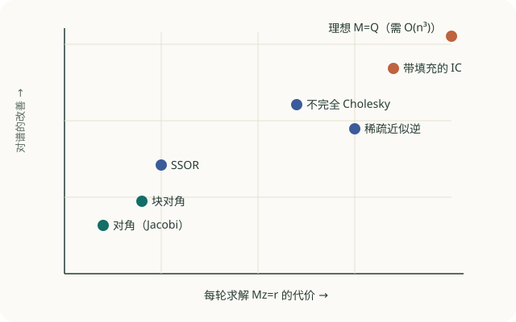

5.1.6 实用预条件器：从 Jacobi 到不完全分解
从对角（Jacobi）到不完全 Cholesky、SSOR 与稀疏近似逆：实用预条件器在代价与谱改善之间取舍，没有放之四海皆准的选择。选择取决于问题的稀疏结构与每次求解 Mz=r 的可承受成本。
从对角到不完全分解
预条件是“用便宜的 M 近似 Q”。最便宜的选择只看 Q 的对角；最强的选择是完全分解 Q，但那与直接求解无异。实用预条件器都落在这两极之间，用结构信息换取谱改善。下图把常见选择按“每轮代价”和“对谱的改善”排列。

对角预条件
取 M=diag(Q)，即只保留对角，称为对角预条件或 Jacobi 预条件。求解 Mz=r 只需逐分量相除，代价 O(n)。它能消除对角尺度的差异：如果 Q 的非对角结构相对均匀，而各行尺度相差很大，Jacobi 就能显著降低有效条件数。
但当尺度差异来自非对角结构时，Jacobi 可能毫无帮助。一个典型反例是一维 Laplacian：它的对角是常数，因而 M 只是单位阵的倍数，M⁻¹Q 与 Q 只差一个标量，条件数完全不变。
不完全 Cholesky
不完全 Cholesky（IC）取 Q 的 Cholesky 分解 Q=LLᵀ，但强制 L 的稀疏结构与 Q 的下三角部分一致，或在消元时丢掉小于容差的元素。于是 M=LLᵀ 是 Q 的近似，而求解 Mz=r 只需两次三角形回代，代价与非零元个数成正比。
IC 通常比 Jacobi 强得多，因为它利用了非对角结构。两个风险必须注意：其一，一般矩阵的不完全分解可能中途遇到负主元而“中断”（breakdown）；其二，保留的填充越多，M 越接近 Q，但设置代价与存储也越大。
块、SSOR 与稀疏近似逆
对角预条件只用了对角，IC 用了非零结构。另外几类常见选择：块预条件把 Q 的对角块当成 M，适合天然分块的问题；SSOR 用一次对称 Gauss–Seidel 扫描构造 M，既用对角也用三角部分；稀疏近似逆（SPAI）直接近似 Q⁻¹，求解 Mz=r 变成一次稀疏矩阵-向量乘积，便于并行，代价在构造阶段。
SSOR 的标准形式取 Q=D+L+Lᵀ（D 为对角，L 为严格下三角），M=(1/(ω(2−ω)))(D+ωL)D⁻¹(D+ωL)ᵀ，其中 ω∈(0,2) 是松弛参数。求解 Mz=r 需要两次三角形回代。
左边是三对角矩阵 Q 的稀疏结构；中间是与其下三角结构一致的不完全因子 L（无填充）；右边是允许额外填充的 L。填充越多，M=LLᵀ 越接近 Q，但设置代价与存储也越大。
一个可复现算例
取一维 Laplacian Q=tridiag(−1,2,−1)，规模 n=10。它的特征值有闭式：μ_k=2−2cos(kπ/(n+1))，k=1,…,n，所以 κ(Q)=cot²(π/(2(n+1)))≈48.4。
对角预条件在这里不起作用：Q 的对角是常数 2，M=2I，于是 M⁻¹Q=Q/2，与 Q 只差一个标量，条件数仍为 48.4。这说明只看对角无法利用非对角结构。
若用不完全 Cholesky 但不允许填充，对三对角矩阵而言因子仍是双对角（无填充），因此 IC 恰好等于精确 Cholesky，M=Q，κ(M⁻¹Q)=1。同一个问题上，预条件器的强弱完全取决于它是否保留了有用的结构。
边界与工程注意
没有“最好”的预条件器：要在设置代价、存储、每轮求解成本、并行性与鲁棒性之间权衡。IC 可能在零或负主元处中断；SSOR 的 ω 需要调参；SPAI 的构造可能比一次 CG 还贵。工程上常从 Jacobi 开始，再根据实测的谱与迭代次数决定是否升级。
本页程序只用一维 Laplacian 的闭式特征值对比“只对角”与“保留结构”两种情形，它不实现 IC 或 SSOR，也不声称对一般问题给出最优预条件器。
交互：问题规模与条件数
拖动滑块改变一维 Laplacian 的规模 n。面板给出无预条件（=Jacobi）的条件数与“保留三对角结构的精确分解”后的条件数，观察前者随 n 增长而后者恒为 1。
实时模型计算
Python：两种预条件在同一问题上的对比
程序只用标准库。它用一维 Laplacian 的闭式特征值断言三件事：κ(Q) 等于 cot²(π/(2(n+1)))，Jacobi 不改变条件数，而保留三对角结构的精确分解给出 κ=1。
"""Compare no-fill preconditioners on the 1D Laplacian via closed-form spectra."""
from math import cos, pi, tan
def laplacian_eigs(n):
return [2 - 2*cos(k*pi/(n + 1)) for k in range(1, n + 1)]
def condition(eigs):
return max(eigs) / min(eigs)
if __name__ == "__main__":
n = 10
eigs = laplacian_eigs(n)
kappa_q = condition(eigs)
# Jacobi: M = 2I, so M^{-1}Q = Q/2 and the condition number is unchanged.
kappa_jacobi = condition([e/2 for e in eigs])
# Exact tridiagonal factorization keeps the pattern, so M = Q and kappa = 1.
kappa_exact = 1.0
assert abs(kappa_q - 1/tan(pi/(2*(n + 1)))**2) < 1e-9
assert abs(kappa_jacobi - kappa_q) < 1e-9
assert kappa_exact == 1.0
print("kappa(Q) =", round(kappa_q, 4), "| Jacobi =", round(kappa_jacobi, 4), "| exact =", kappa_exact)